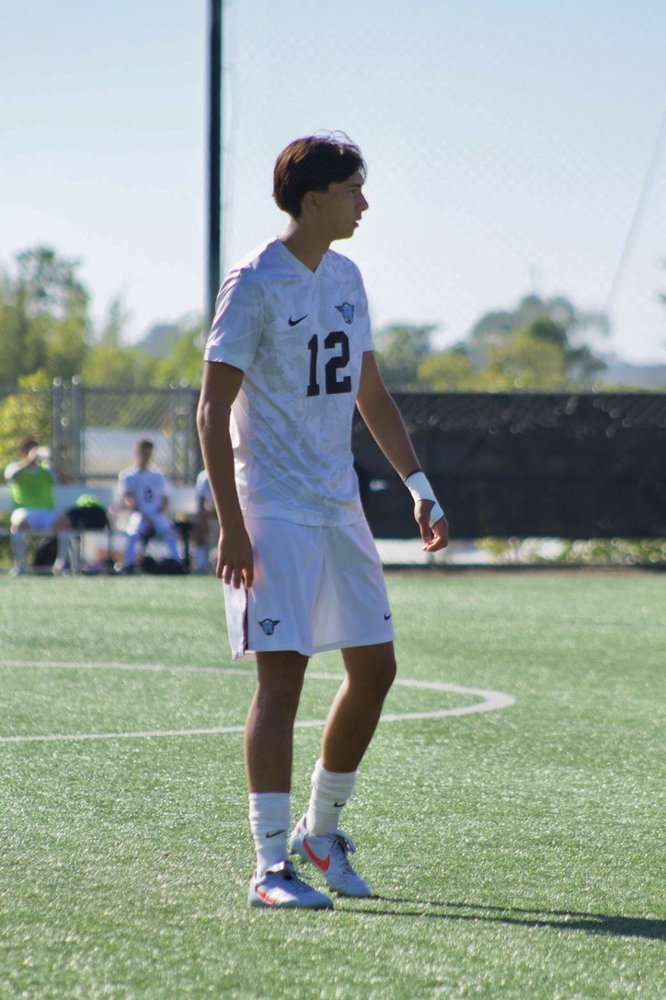

Welcome to my personal site and portfolio! Here you can find information about me, my projects, and my contact details. I am a 3rd year UCSD Data Science Major and student athlete. I love to play soccer and have been playing for 19 years and hope to continue to play at the highest level possible
